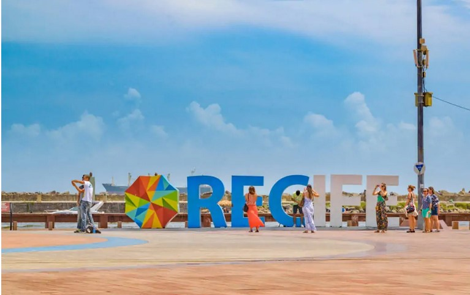
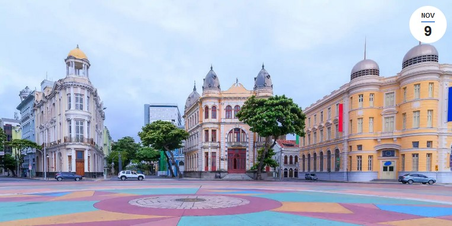
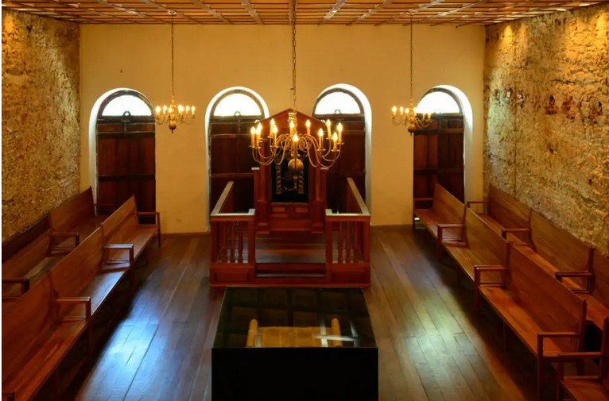
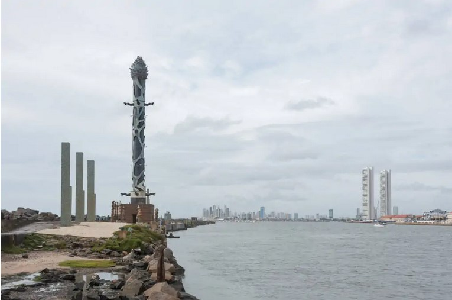

O Nordeste reserva destinos turísticos maravilhosos para quem deseja viajar, curtir o verão e se encantar com paisagens deslumbrantes. Seja nas capitais ou no interior, escolher uma cidade nordestina para conhecer nunca deixa de ser uma boa opção. A capital pernambucana, Recife, recebe mais de um milhão de visitantes durante o ano. Praias, monumentos e construções históricas chamam a atenção dos turistas
A cidade também é conhecida como a Veneza do Brasil por causa de seus muitos canais e pontes. Esta cidade vibrante é um destino turístico favorito para todos os tipos de viajantes, atraindo lakhs de turistas de diferentes partes do país.
Algumas das principais atrações de Recife incluem o Museu de Arte Contemporânea, a Praia da Boa Viajem e o Centro Histórico de Olinda. Os turistas podem desfrutar de uma variedade de atividades como fazer compras aqui, saborear comidas deliciosas e vida noturna aqui. Se você está procurando umas férias relaxantes ou quer se entregar a algumas atividades aventureiras, esta bela cidade no Brasil tem muito a oferecer para todos.
Marco Zero é uma das principais atrações históricas de Recife. É uma praça no centro da cidade do Recife conhecida como Marco Zero. Este lugar é tão popular para a população local quanto é um lugar interessante para os turistas. Também é chamado de Marco Zero porque durante a era colonial foi a partir deste ponto que se mediu a distância para o resto do estado de Pernambuco. O entorno deste lugar é sempre cheio de atividades e atrações, seja de dia ou de noite. Especialmente para aquelas pessoas que querem se dedicar a múltiplas atividades.
Pode-se dizer que ele se situa no centro histórico da cidade, que é mais conhecido como Recife Antigo por ser a parte onde se iniciou o povoamento da capital pernambucana.
A popularização do nome Marco Zero aconteceu desde 1938, devido à instalação do símbolo geográfico na parte central da praça. Ele foi uma doação do Automóvel Clube de Pernambuco.
Além disso, há nela uma estátua de bronze de 2,80 metros, de autoria do escultor francês Félix Charpentier.
Na Sinagoga Kahal Zur Israel funciona, atualmente, o Centro Judaico de Pernambuco, enquanto o Espaço Cultural Paço do Frevo procura manter viva a tradição do estilo musical que é Patrimônio Imaterial da Humanidade, segundo a Unesco.
O Parque de Esculturas é composto por obras do artista plástico Francisco Brennand, e foi inaugurado como comemoração dos 500 anos de descobrimento do Brasil. Foi instalado sobre o molhe do porto. Tartarugas, pelicanos, ovos, maçarico, pássaros roca e sentinela guardam a principal obra do parque, a torre de cristal, inspirada em uma flor descoberta pelo paisagista Roberto Burle Marx.
